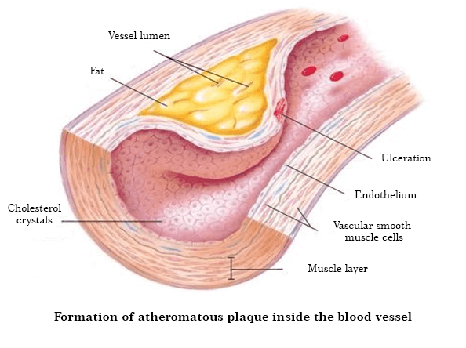

Cum se tratează hipertensiunea arterială în Elveția. Un cardiolog elvețian cu rădăcini române a fost intervievat de televiziunea locală.
Stefano Ciaroni este președintele Centrului de Cardiologie Clinică din Geneva.
Stefano Ciaroni a venit la Bucureşti pentru a împărtăși experiența sa cu colegii și pentru a vedea cum este tratată hipertensiunea în țara noastră. În România medicina încă rămâne în urmă față de restul Europei.
După un interviul TV, Dr. Stefano Ciaroni a fost de acord să răspundă la întrebările noastre și să-și dea recomandările. Medicul a spus care este problema medicinii și a spus că pacienții hipertensivi din țara noastră nu se vor recupera niciodată.
În interviul dvs. cu reporterii, ați vorbit despre problemele cumplite ale medicinei noastre, când am auzit acest lucru am fost foarte surprinși. Puteți să comentați acest lucru?
Nu vreau să jignesc pe nimeni, respect această țară și locuitorii ei, dar vreau să repet ceea ce am spus deja. Scara problemei este terifiantă, dar, dintr-un anumit motiv, toată lumea închide ochii. Medicina în România este la același nivel ca acum 20 sau 30 de ani. Cel puțin vorbesc despre tratarea bolilor de inimă și a tensiunii arteriale crescute.
Doar ascultați ce recomandă medicii pentru tratamentul tensiunii arteriale crescute în România: exforge, valsartan, lisinopril, enalapril, fosinopril și alte medicamente similare.
Dar aceste medicamente nu tratează hipertensiunea arterială, ci doar o reduc temporar. Și acum imaginați-vă ce se întâmplă cu organismul nostru după astfel de medicamente puternice. Pacientul ia medicamentul, tensiunea arterială scade. Cu toate acestea, după un timp, tensiunea crește din nou. Astfel de modificări provoacă mai mult rău organismului decât o tensiune arterială stabilă. Vasele de sânge sunt distruse foarte repede și există riscul unui atac de cord sau accident vascular cerebral.
În Elveția, această metodă de tratare a hipertensiunii arteriale nu a mai fost folosită de peste 20 de ani. Iar pastilele pentru scăderea tensiunii arteriale sunt prescrise de medici în cazuri rare, iar astfel de medicamente nu trebuie administrate în fiecare zi! În Elveția, analogii unor astfel de medicamente puternice sunt vândute numai pe bază de rețetă, iar pacientul este avertizat cu privire la toate riscurile de a lua astfel de medicamente.
Iar medicii și farmaciștii români ucid oameni! Este clar că vânzarea continuă a medicamentelor scumpe este mai profitabilă decât în cazul în care pacientul ar cumpăra un medicament și s-ar vindeca de hipertensiune pentru totdeauna. Acest lucru nu este profitabil pentru companiile farmaceutice. Desigur, că este teribil.
Cum se tratează hipertensiunea arterială în Elveția?
Oamenii de știință elvețieni și-au dat seama de mult că este necesar să se elimine cauzele tensiunii arteriale crescute și să nu se lupte cu simptomele. Aceasta este cheia unui tratament complet și sigur. Care este principala cauză a hipertensiunii arteriale? Îngustarea lumenului vaselor de sânge! Hipertensiunea arterială legată de vârstă apare la om în timp și în 96% din toate cazurile. Medicina modernă elvețiană tratează o astfel de hipertensiune.
Imaginați-vă că vasele sunt țevi. Pereții țevilor sunt murdari, este mai dificil să treci apă prin ele. Cu toate acestea, apa trebuie să curgă și să treacă prin conducte în cantitate suficientă. Ce trebuie făcut pentru a curge cu succes apa? Așa este, crește presiunea. Așa face inima. Și acest lucru duce la o creștere a tensiunii arteriale, ceea ce înseamnă o creștere rapidă a mușchiului inimii. Dar oamenii de știință elvețieni au venit cu o altă metodă - de a curăța vasele de contaminare. Așa se tratează hipertensiunea în Elveția.
În 800 d.Hr., vindecătorii au început să folosească un decoct special făcut din plante medicinale rare. Aceste ierburi scad nivelul colesterolului - ca urmare, vasele de sânge sunt curățate, circulația sângelui se normalizează și tensiunea arterială revine la normal. Această metodă a ajutat acum mulți ani și ajută acum. Plantele medicinale sunt singurul mod sigur de a vă menține tensiunea sub control. Nu mai sunt necesare medicamente pentru scăderea tensiunii arteriale. Curățând vasele în acest fel, veți înceta să vă mai fie teamă că hipertensiunea va distruge organele interne. Oamenii pot deveni sănătoși.
Când am văzut statisticile medicale din România, am fost șocat. România are un număr mare de decese (milioane de oameni mor în fiecare an din cauza atacurilor de cord). Dar nu este cancer, nu este SIDA, este hipertensiune arterială! 80% dintre pacienții hipertensivi nu trăiesc până la 60 de ani!
În Elveția, hipertensiunea arterială legată de vârstă și hipertensiunea arterială nu sunt considerate boli periculoase. O creștere a tensiunii arteriale indică doar faptul că vasele sunt murdare și trebuie curățate. După aceea, tensiunea încetează să crească și persoana continuă să ducă o viață sănătoasă normală.
Cum se curăță vasele de sânge în Elveția?
În prezent, există produse specializate destinate curățării vaselor de sânge de colesterol. Cel mai bun dintre acestea este . Acest produs nu conține substanțe chimice. Produsul este 100% natural și conține extracte curative rare de ierburi și fructe de pădure: păducel, hamei, sunătoare, leonurus, tei și coada calului. Acesta este motivul pentru care este atât de benefic pentru organism.
include peste 40 de componente. Nu le voi enumera pe toate, voi numi doar câteva.
| Extract de păducel | Scade tensiunea arterială în mod natural. Previne acumularea de săruri de sodiu în celule și în vasele de sânge |
| Extract de sunătoare | Elimină toxinele din vasele de sânge |
| Extract de Leonurus | Curăță vasele de sânge de colesterol |
| Extract de coada calului | Crește conținutul de oxigen din sânge |
| Extract de floare de tei | Extinde vasele de sânge, scade tensiunea arterială imediat după administrarea picăturilor |
| Vitamina B12 | Hrănește și tonifică |
| Potasiu | Îndepărtează excesul de lichid din organism |
| Sodiu | Reduce umflarea care apare adesea la pacienții cu hipertensiune arterială |
| Fosfor | Crește tonul vaselor de sânge, stabilizează funcția sistemului nervos |
| Calciu | Reduce riscul de criză hipertensivă și accident vascular cerebral |
Este acest remediu vândut în farmaciile din România?
Nu, și aceasta este principala problemă. Medicii noștri preferă să hrănească oamenii cu pastile pentru scăderea tensiunii arteriale în loc să trateze hipertensiunea.
Din câte știu, producătorii de au dorit să intre pe piața farmaceutică română, dar birocrația din România este ineradicabilă și producătorii nu au primit încă nici un răspuns. Dar există o explicație pentru acest lucru: dacă va fi pus în vânzare în farmacii, companiile farmaceutice vor suferi pierderi uriașe. De ce să cumpărați pastile scumpe dacă puteți vindeca hipertensiunea odată pentru totdeauna și la un preț rezonabil? Din păcate, farmacologia de astăzi este o afacere! Chiar și în Europa.
Ce sfaturi le-ați oferi pacienților români cu tensiune arterială crescută?
În primul rând, să nu dispere. Există o ieșire. Am convenit cu cel mai mare Institut Român de Cardiologie, care cel mai probabil va vinde tuturor românilor care suferă de hipertensiune. Institutul produce și distribuie cantitatea necesară de la un preț redus.
Acum permiteți-mi să vă spun ce trebuie să faceți pentru a comanda la un preț redus:
- Completați formularul de comandă de pe acest site.
- După aceea, managerul vă va contacta pentru a confirma adresa de livrare.
Veți putea primi „” cu livrare la domiciliu în termen de 2-3 zile, plata se face după primirea coletului.
Publicăm rezultatele unui sondaj efectuat în rândul celor care au încercat . Producătorul a cerut tuturor persoanelor care au achiziționat produsul să participe la un sondaj și să ajute să afle dacă a contribuit la îmbunătățirea sănătăţii lor. În prezent, aproximativ 5.000 de persoane au luat deja parte la sondaj.
Rezultatele examinării pacienților care urmează cursul:
- Tensiunea arterială complet stabilizată - hipertensiune vindecată: 98% dintre respondenți
- Pulsul a revenit la normal: 97% dintre respondenți;
- Durerile de cap au dispărut: 99% dintre respondenți;
- Vedere îmbunătățită: 74% dintre respondenți;
- Starea de sănătate s-a îmbunătățit - 99% dintre respondenți.
După cum puteți vedea, a ajutat mulți cetățeni români să scape de o boală mortală în doar 1 curs.
Cât timp va fi disponibil la prețul redus?
Institutul va distribui la un preț redus până la epuizarea stocurilor. Vreau să vă avertizez că au rămas foarte puține pachete . Oamenii observă rapid eficiența acestui produs în comparație cu alte pastile scumpe și comandă în cantități mari.
Pentru a menține puritatea vaselor de sânge, recomand repetarea tratamentului cu la fiecare 1-2 ani, în special pentru persoanele în vârstă. Acest lucru vă va ajuta să vă îmbunătățiți sănătatea și să întârziați apariția semnelor de îmbătrânire.
A avea vasele de sânge curate este o garanție a sănătății.
Comentarii